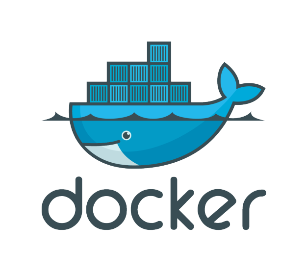

Docker
Docker é uma plataforma de contêineres que permite empacotar e distribuir aplicações de maneira isolada, facilitando a replicação de ambientes e o deployment em diferentes infraestruturas de forma ágil e consistente.
Docker é uma plataforma de contêineres que permite empacotar e distribuir aplicações de maneira isolada, facilitando a replicação de ambientes e o deployment em diferentes infraestruturas de forma ágil e consistente.